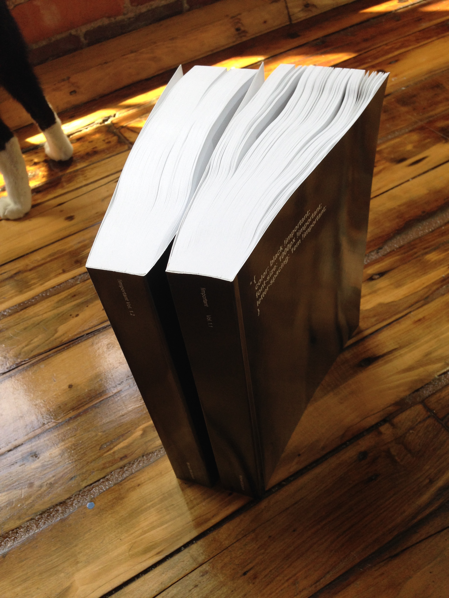
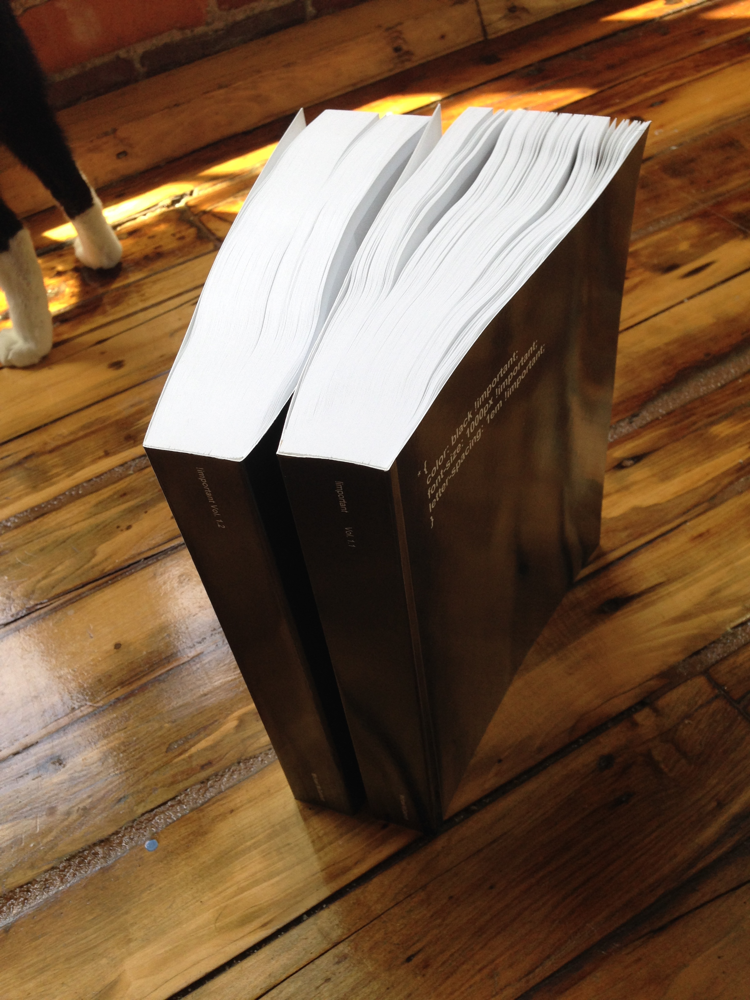

---
layout: page
title: Facebook Book
author: Michael McDermott
description: Transforming a site with a few lines of CSS
category: project
printready: true
---
After working on This is Important I wanted to continue work that followed along the same guidelines.
###### Volume I, 740 pages & Volume II, pages (8.5 in x 11 in), digitally printed by Lulu, RISD 2014
 
